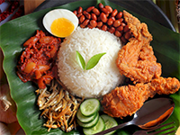

Menu Special
Menu Terlaris Dibulan Ini

Nasi Lemak
kata “lemak” merupakan serapan dari kata lamak dalam Bahasa Padang yang artinya gurih dan berminyak.

Rendang
Rendang atau randang adalah masakan daging asli Indonesia yang berasal dari Minangkabau.

Sate Padang
Sate Padang memakai bahan daging sapi dengan bumbu kuah kacang yang pedas.